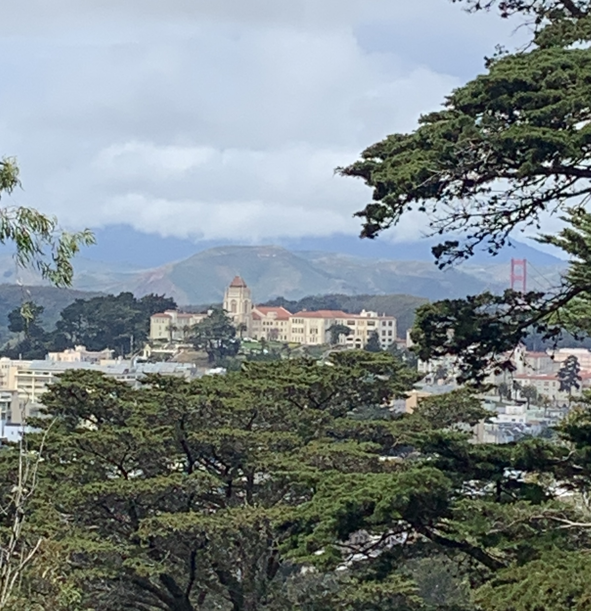
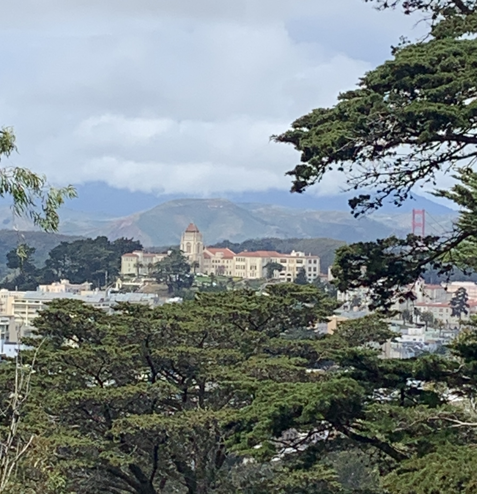


 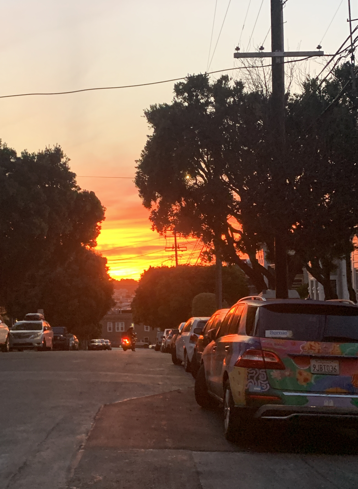
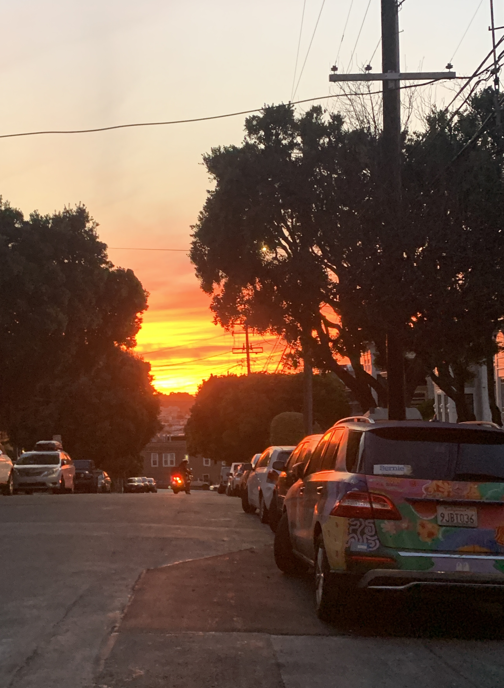

 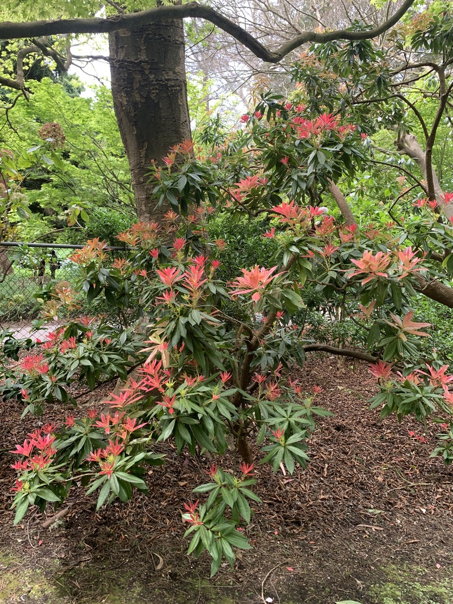
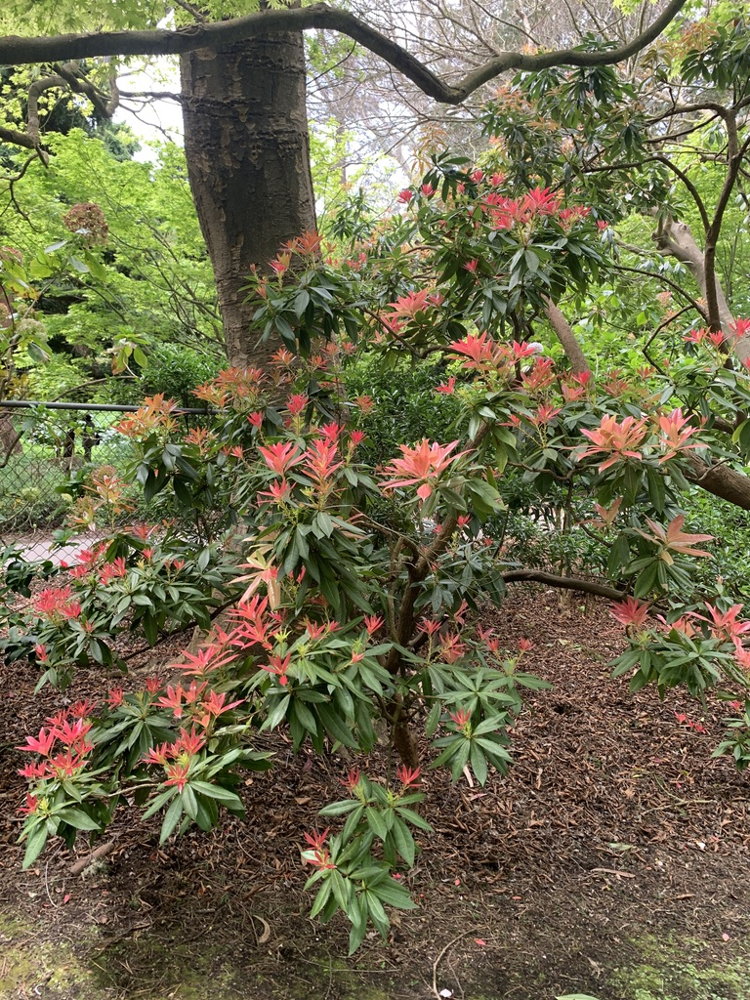


 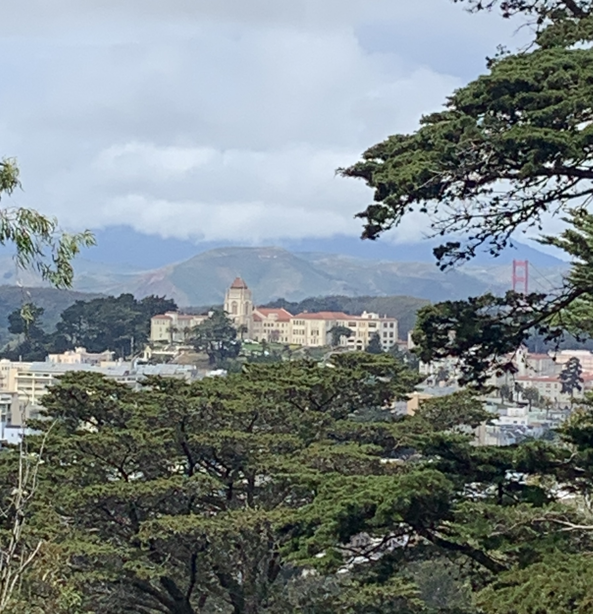
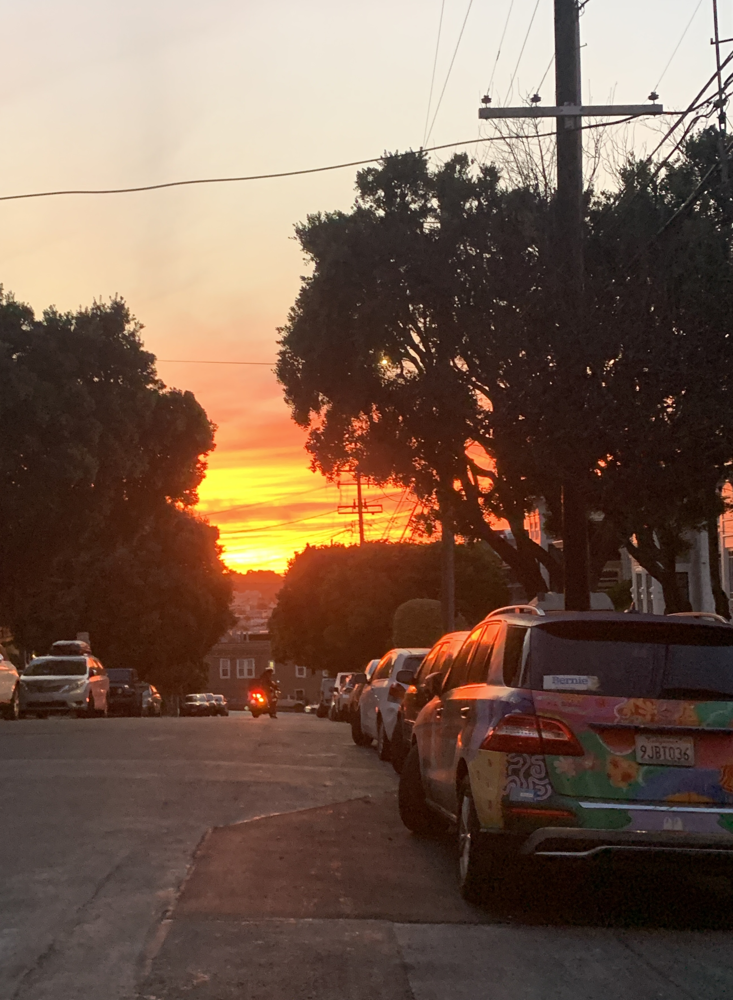
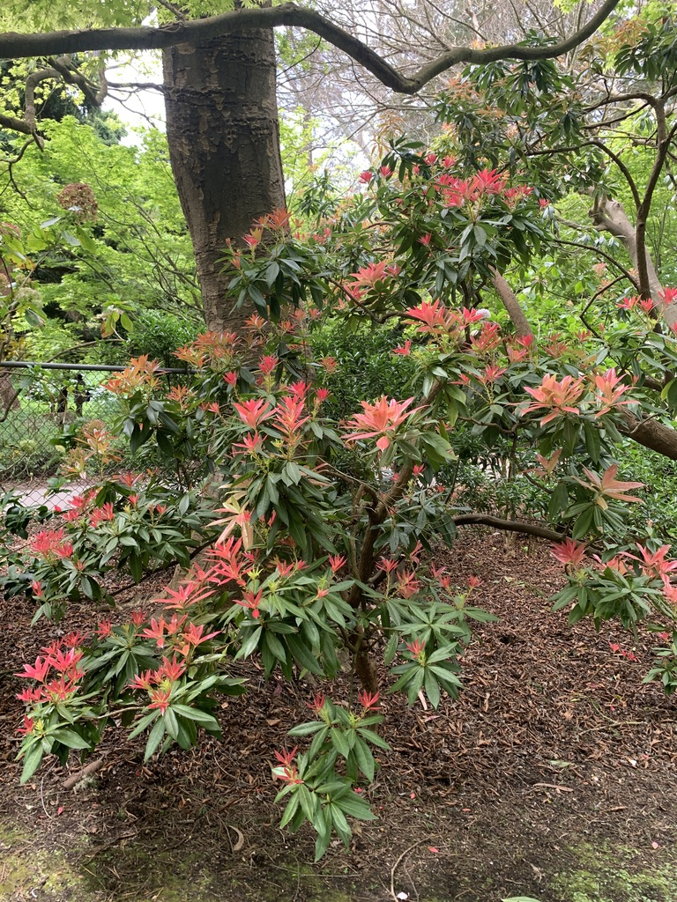
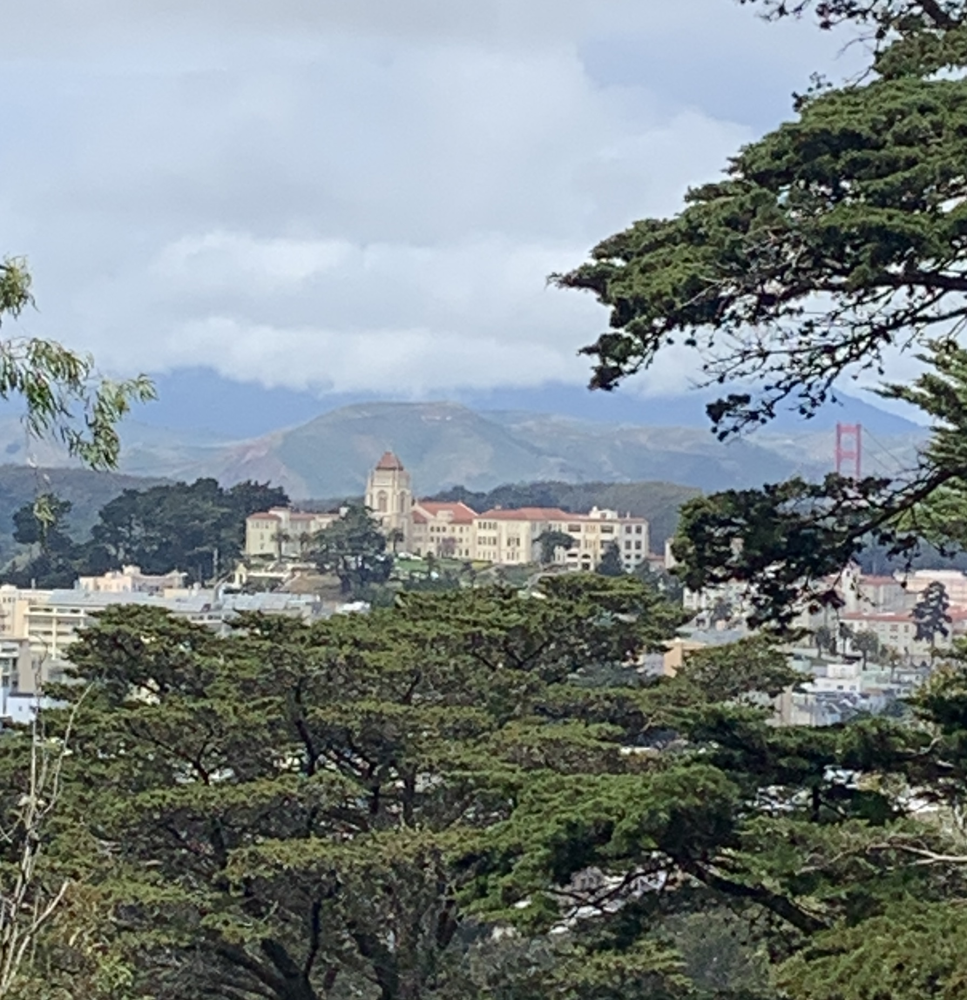
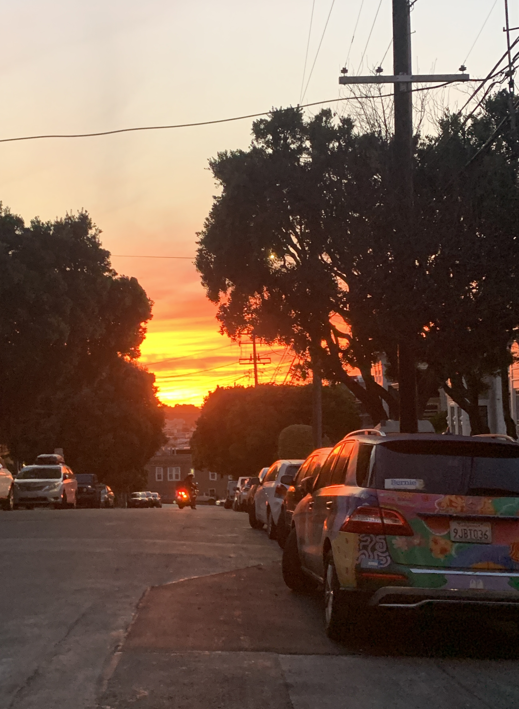
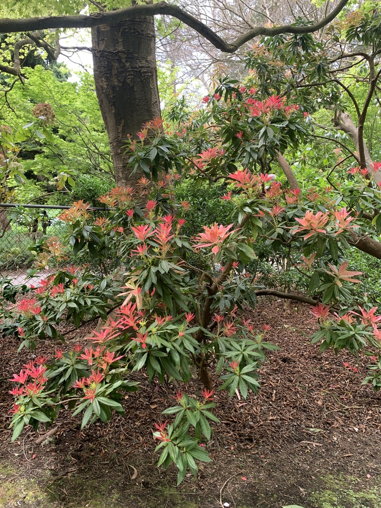
Documentation of the first weeks of sophomore year. My computer caught me at the most inconvenient of times y'all! Just see for yourself...
Click here for my reflections and insights!